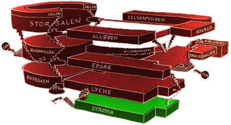

Strossa
Nederst i Samfundet, under Edgar og Lyche, finner du Strossa. Til UKA-09 var det Strossa som fikk makeover, og lokalet ble forvandlet til en stilren lounge for trondheimsstudentene. Her finner du DJ-er som spiller rolig chillout-electronica og forfriskende drinker bak baren.

Visste du at?
- Strossa har en lang historie bak seg. Den ble først gravd ut i kjelleren under UKA – 67. Før dette ble etasjen brukt som vaskekjeller og oppholdssted for Herreklubben.
- Strossa har også tidligere vært kjent som Pub-a-go-og og Underpub, der det ble holdt en del kontroversielle arrangement som f.eks toppløs servering og strippeshow.
- Den runde baren er dekorert med tusenvis av knuste Bombay Gin-flasker. Det var vanskelig å få tak nok under byggeperioden, og det er derfor spedd på med Farris-flasker.